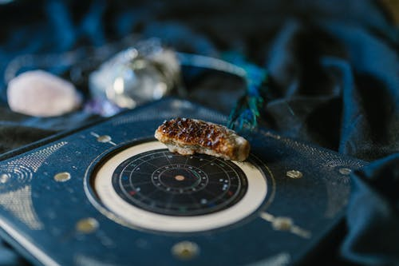

Таро и Астрология
Звучат эти слова магически, возможно они и правда приближены к магии... Таро и Астролгия абсолютно разные понятия, но в чем-то они схожи. Карты Таро расскажут вам о ответах на ваши вопросы, которые уже лежат у вас в подсознании. Астрология расскажет вам о вас же много удивительного, чего вы даже сами о себе не знали.
Кто же я?
Давайте немного познакомимся
Меня зовут Надежда. Я занимаюсь Таро и Астрологией.

-
Расклады на отношения
-
Расклады на вопросы
-
Что-то про тарологию
-

Натальные карты
-

Что-то про астрологию
-
Что-то про астрологию